स्कन्ध 11 · अध्याय 14
श्लोक १
उद्धव उवाच–
वदन्ति कृष्ण श्रेयांसि बहूनि ब्रह्मवादिनः ।
तेषां विकल्पः प्राधान्यमुताहो एकमुख्यता ।। १ ।।
वदन्ति कृष्ण श्रेयांसि बहूनि ब्रह्मवादिनः ।
तेषां विकल्पः प्राधान्यमुताहो एकमुख्यता ।। १ ।।
श्लोक २
भवतोदाहृतः स्वामिन् भक्तियोगोऽनपेक्षितः ।
निरस्य सर्वतः सङ्गं येन त्वय्याविशेन्मनः ।। २ ।।
निरस्य सर्वतः सङ्गं येन त्वय्याविशेन्मनः ।। २ ।।
भागवततात्पर्यनिर्णय
श्लोक ३
श्रीभगवानुवाच–
कालेन नष्टा प्रलये वाणीयं वेदसञ्ज्ञिता ।
मयाऽऽदौ ब्रह्मणे प्रोक्ता धर्मो यस्यां मदात्मकः ।। ३ ।।
कालेन नष्टा प्रलये वाणीयं वेदसञ्ज्ञिता ।
मयाऽऽदौ ब्रह्मणे प्रोक्ता धर्मो यस्यां मदात्मकः ।। ३ ।।
श्लोक ४
तेन प्रोक्ता च पुत्राय मनवे पूर्वजाय सा ।
ततो भृग्वादयोऽगृह्णन् शब्दब्रह्म महर्षयः ।। ४ ।।
ततो भृग्वादयोऽगृह्णन् शब्दब्रह्म महर्षयः ।। ४ ।।
भागवततात्पर्यनिर्णय
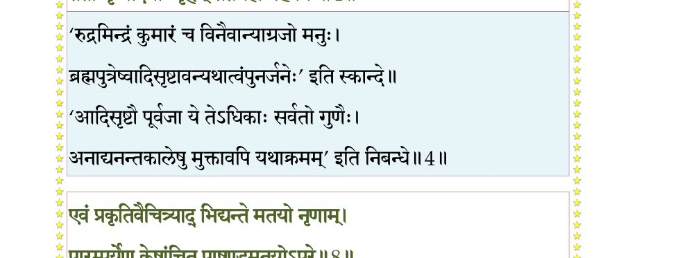
श्लोक ५
तेभ्यः पितृभ्यस्तत्पुत्रा देवदानवगुह्यकाः ।
मनुष्याः सिद्धगन्धर्वाः सविद्याधरचारणाः ।। ५ ।।
मनुष्याः सिद्धगन्धर्वाः सविद्याधरचारणाः ।। ५ ।।
श्लोक ६
किन्देवाः किन्नराः नागा रक्षःकिम्पुरुषादयः ।
बह्व्यस्तेषां प्रकृतयो रजःसत्वतमोभवाः(भुवः) ।। ६ ।।
बह्व्यस्तेषां प्रकृतयो रजःसत्वतमोभवाः(भुवः) ।। ६ ।।
श्लोक ७
याभिर्भूतानि भिद्यन्ते भूतानां मतयस्तथा ।
यथाप्रकृति सर्वेषां चित्रा वाचः स्रवन्ति हि ।। ७ ।।
यथाप्रकृति सर्वेषां चित्रा वाचः स्रवन्ति हि ।। ७ ।।
श्लोक ८
एवं प्रकृतिवैचित्र्याद् भिद्यन्ते मतयो नृणाम् ।
पारम्पर्येण केषाञ्चित् पाखण्डमतयोऽपरे ।। ८ ।।
पारम्पर्येण केषाञ्चित् पाखण्डमतयोऽपरे ।। ८ ।।
भागवततात्पर्यनिर्णय
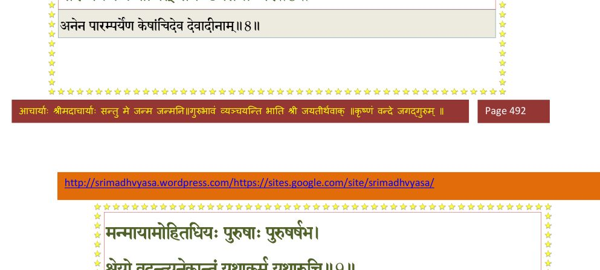
श्लोक ९
मन्मायामोहितधियः पुरुषाः पुरुषर्षभ ।
श्रेयो वदन्त्यनेकान्तं यथाकर्म यथारुचि ।। ९ ।।
श्रेयो वदन्त्यनेकान्तं यथाकर्म यथारुचि ।। ९ ।।
भागवततात्पर्यनिर्णय
श्लोक १०
धर्ममेके यशश्चान्ये कामं सत्यं दमं शमम् ।
अन्ये वदन्ति चार्थं वा ऐश्वर्यं त्यागभोजने ।
केचिद् यज्ञं तपो दानं व्रतानि नियमान् यमान्।। १० ।।
अन्ये वदन्ति चार्थं वा ऐश्वर्यं त्यागभोजने ।
केचिद् यज्ञं तपो दानं व्रतानि नियमान् यमान्।। १० ।।
भागवततात्पर्यनिर्णय
श्लोक ११
आद्यन्तवन्त एवैषां लोकाः कर्मविनिर्मिताः ।
दुःखोदर्कास्तमोनिष्ठाः क्षुद्रानन्दाः शुचार्पिताः।। ११ ।।
दुःखोदर्कास्तमोनिष्ठाः क्षुद्रानन्दाः शुचार्पिताः।। ११ ।।
भागवततात्पर्यनिर्णय
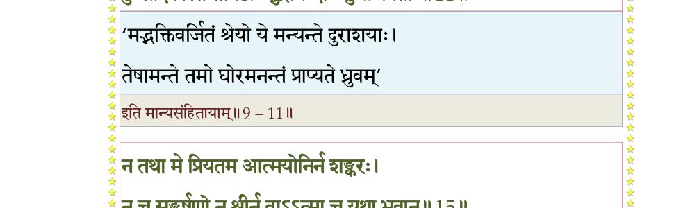
श्लोक १२
मय्यर्पितात्मनः सत्ये निरपेक्षस्य सर्वतः ।
मदात्मकं सुखं यत् तत् कुतः स्याद् विषयात्मनाम्।। १२ ।।
मदात्मकं सुखं यत् तत् कुतः स्याद् विषयात्मनाम्।। १२ ।।
श्लोक १३
अकिञ्चनस्य दान्तस्य शान्तस्य समचेतसः ।
मया सन्तुष्टमनसः सर्वाः सुखमया दिशः।। १३ ।।
मया सन्तुष्टमनसः सर्वाः सुखमया दिशः।। १३ ।।
श्लोक १४
न पारमेष्ठ्यं न महेन्द्रधिष्ण्यं न सार्वभौमं न रसाधिपत्यम् ।
न योगसिद्धीरपुनर्भवं वा मय्यर्पितात्मेच्छति मद् विनाऽन्यत्।।१४।।
न योगसिद्धीरपुनर्भवं वा मय्यर्पितात्मेच्छति मद् विनाऽन्यत्।।१४।।
श्लोक १५
न तथा मे प्रियतम आत्मयोनिर्न शङ्करः ।
न च सङ्कर्षणो न श्रीर्नवाऽऽत्मा च यथा भवान्।। १५ ।।
न च सङ्कर्षणो न श्रीर्नवाऽऽत्मा च यथा भवान्।। १५ ।।
भागवततात्पर्यनिर्णय
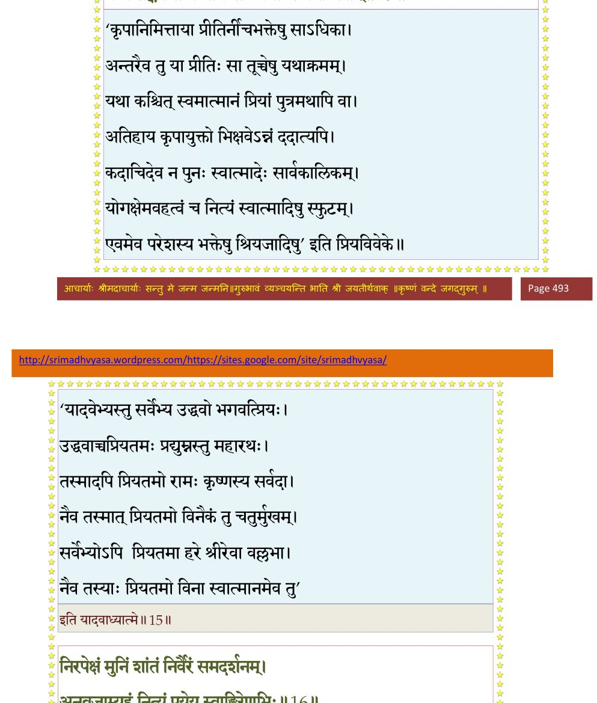
श्लोक १६
निरपेक्षं मुनिं शान्तं निर्वैरं समदर्शनम् ।
अनुव्रजाम्यहं नित्यं पूयेय स्वाङ्घ्रिरेणुभिः ।। १६ ।।
अनुव्रजाम्यहं नित्यं पूयेय स्वाङ्घ्रिरेणुभिः ।। १६ ।।
भागवततात्पर्यनिर्णय
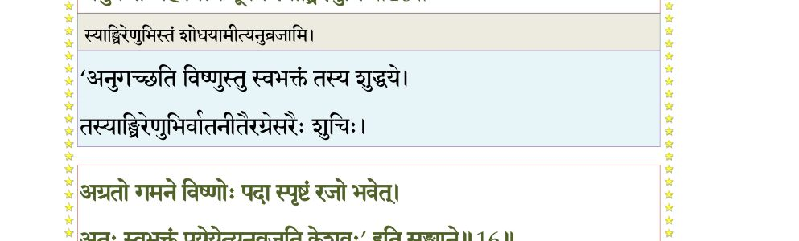
श्लोक १७
निष्किञ्चना मय्यनुरक्तचेतसः शान्ता महान्तोऽखिलजीववत्सलाः ।
कामैरनालब्धधियोऽजुषश्च ते नैरपेक्ष्यं हि विदुः सुखं मम ।। १७ ।।
कामैरनालब्धधियोऽजुषश्च ते नैरपेक्ष्यं हि विदुः सुखं मम ।। १७ ।।
श्लोक १८
बाध्यमानोऽपि मद्भक्तो विषयैरजितेन्द्रियः ।
प्रशस्तयाऽपि मद्भक्त्या विषयैर्नाभिभूयते ।। १८ ।।
प्रशस्तयाऽपि मद्भक्त्या विषयैर्नाभिभूयते ।। १८ ।।
श्लोक १९
यथाऽग्निः सुसमिद्धार्चिः करोत्येनांसि भस्मसात् ।
तथा मद्विषया भक्तिरुद्धवैनांसि कृत्स्नशः ।। १९ ।।
तथा मद्विषया भक्तिरुद्धवैनांसि कृत्स्नशः ।। १९ ।।
श्लोक २०
न साधयति मां योगो न साङ्ख्यं धर्म उद्धव ।
न स्वाध्यायस्तपस्त्यागो यथा भक्तिर्ममोर्जिता ।। २० ।।
न स्वाध्यायस्तपस्त्यागो यथा भक्तिर्ममोर्जिता ।। २० ।।
श्लोक २१
भक्त्याऽहमेकया ग्राह्यः श्रद्धयाऽऽत्मा प्रियः सताम् ।
भक्तिः पुनाति मन्निष्ठा सकामानपि सम्भवात्।। २१ ।।
भक्तिः पुनाति मन्निष्ठा सकामानपि सम्भवात्।। २१ ।।
श्लोक २२
धर्मः सत्यदयोपेतो विद्या वा तपसाऽन्विता ।
मद्भक्त्यपेतमात्मानं न सम्यक् प्रपुनाति हि ।। २२ ।।
मद्भक्त्यपेतमात्मानं न सम्यक् प्रपुनाति हि ।। २२ ।।
श्लोक २३
कथं विना रोमहर्षं द्रवता चेतसा विना ।
विनाऽऽनन्दाश्रुकलया शुद्ध्येद् भक्त्या विनेश्वरः।। २३ ।।
विनाऽऽनन्दाश्रुकलया शुद्ध्येद् भक्त्या विनेश्वरः।। २३ ।।
भागवततात्पर्यनिर्णय
श्लोक २४
वाग्गद्गदा द्रवते यस्य चित्तं रुदत्यभीक्ष्णं हसति क्वचिच्च ।
विलज्ज उद्गायति नृत्यते च मद्भक्तियुक्तो भुवनं पुनाति।। २४ ।।
विलज्ज उद्गायति नृत्यते च मद्भक्तियुक्तो भुवनं पुनाति।। २४ ।।
भागवततात्पर्यनिर्णय
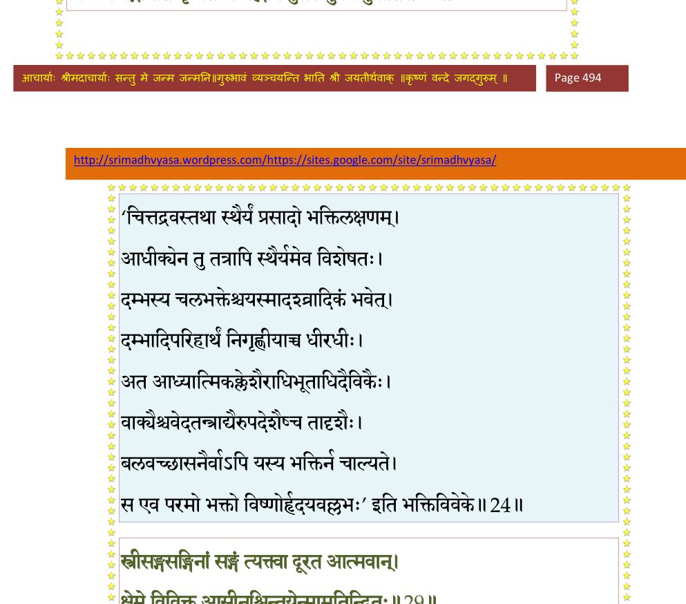
श्लोक २५
यथाऽग्निना हेम मलं जहाति ध्मातं पुनः स्वं भजते च रूपम् ।
आत्मा च कर्मानुशयं विधूय मद्भक्तियोगेन भजत्यथो माम्।।२५।।
आत्मा च कर्मानुशयं विधूय मद्भक्तियोगेन भजत्यथो माम्।।२५।।
श्लोक २६
यथायथाऽऽत्मा परिमृज्यतेऽसौ मत्पुण्यगाथाश्रवणाभिधानैः ।
तथातथा पश्यति सूक्ष्मतत्वं चक्षुर्यथैवाञ्जनसम्प्रयुक्तम्।। २६ ।।
तथातथा पश्यति सूक्ष्मतत्वं चक्षुर्यथैवाञ्जनसम्प्रयुक्तम्।। २६ ।।
श्लोक २७
विषयान् ध्यायतश्चित्तं विषयेषु विषज्जते ।
मामनुस्मरतश्चित्तं मय्येव प्रविलीयते।। २७ ।।
मामनुस्मरतश्चित्तं मय्येव प्रविलीयते।। २७ ।।
श्लोक २८
तस्मादसदभिध्यानं यथा स्वप्नमनोरथम् ।
हित्वा मयि समाधत्स्व मनो मद्भावभावितम्।। २८ ।।
हित्वा मयि समाधत्स्व मनो मद्भावभावितम्।। २८ ।।
श्लोक २९
स्त्रीसङ्गसङ्गिनां सङ्गं त्यक्त्वा दूरत आत्मवान् ।
क्षेमे विविक्त आसीनश्चिन्तयेन्मामतन्द्रितः।। २९ ।।
क्षेमे विविक्त आसीनश्चिन्तयेन्मामतन्द्रितः।। २९ ।।
भागवततात्पर्यनिर्णय
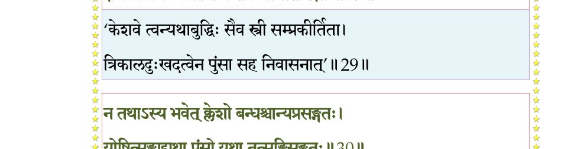
श्लोक ३०
न तथाऽस्य भवेत् क्लेशो बन्धश्चान्यप्रसङ्गतः ।
योषित्सङ्गाद् यथा पुंसो यथा तत्सङ्गिसङ्गतः।। ३० ।।
योषित्सङ्गाद् यथा पुंसो यथा तत्सङ्गिसङ्गतः।। ३० ।।
भागवततात्पर्यनिर्णय
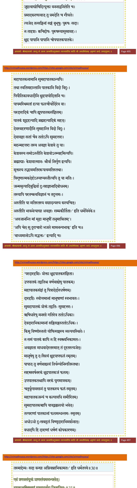
श्लोक ३१
उद्धव उवाच–
यथा त्वामरविन्दाक्ष यादृशं वा यदात्मकम् ।
ध्यायेन्मुमुक्षुरेतन्मे ध्यानं त्वं वक्तुमर्हसि।। ३१ ।।
यथा त्वामरविन्दाक्ष यादृशं वा यदात्मकम् ।
ध्यायेन्मुमुक्षुरेतन्मे ध्यानं त्वं वक्तुमर्हसि।। ३१ ।।
श्लोक ३२
श्रीभगवानुवाच–
सम आसन आसीनः समकायो यथासुखम् ।
हस्तावुत्सङ्ग आधाय स्वनासाग्रकृतेक्षणः।। ३२ ।।
सम आसन आसीनः समकायो यथासुखम् ।
हस्तावुत्सङ्ग आधाय स्वनासाग्रकृतेक्षणः।। ३२ ।।
श्लोक ३३
प्राणस्य शोधयेन्मार्गं पूरकुम्भकरेचकैः ।
विपर्ययेणापि शनैरभ्यसेन्निर्जितेन्द्रियः।। ३३ ।।
विपर्ययेणापि शनैरभ्यसेन्निर्जितेन्द्रियः।। ३३ ।।
श्लोक ३४
हृद्यविच्छिन्नमोङ्कारं घण्टानादं बिसोर्णवत् ।
प्राणेनोदीर्य तत्राथ पुनः संवेशयेत् स्वरम्।। ३४ ।।
प्राणेनोदीर्य तत्राथ पुनः संवेशयेत् स्वरम्।। ३४ ।।
श्लोक ३५
एवं प्रणवसंयुक्तं प्राणसंयममभ्यसेत् ।
दशकृत्वस्त्रिषवणं मासादर्वाग् जितानलः।। ३५ ।।
दशकृत्वस्त्रिषवणं मासादर्वाग् जितानलः।। ३५ ।।
भागवततात्पर्यनिर्णय
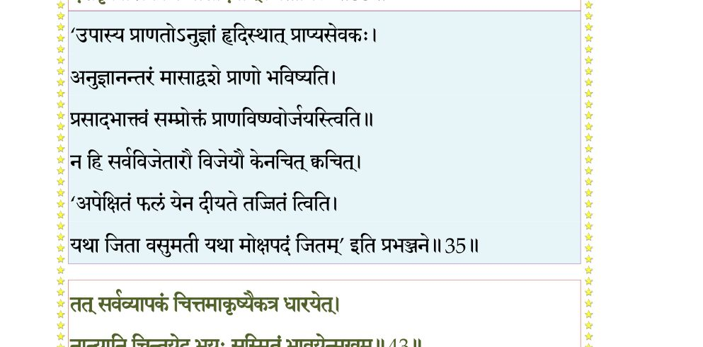
श्लोक ३६
हृत्पुण्डरीकमन्तःस्थमूर्ध्वनालमधोमुखम् ।
ध्यात्वोर्ध्वमुखमुन्निद्रमष्टपत्रं सकर्णिकम्।। ३६ ।।
ध्यात्वोर्ध्वमुखमुन्निद्रमष्टपत्रं सकर्णिकम्।। ३६ ।।
श्लोक ३७
कर्णिकायां न्यसेत् सूर्यसोमाग्नीनुत्तरोत्तरम् ।
वह्निमध्ये स्मरेद् रूपं ममैतद् ध्यानमङ्गलम्।। ३७ ।।
वह्निमध्ये स्मरेद् रूपं ममैतद् ध्यानमङ्गलम्।। ३७ ।।
श्लोक ३८
समं प्रशान्तं सुमुखं दीर्घचारुचतुर्भुजम् ।
सुचारुसुन्दरग्रीवं सुकपोलं शुचिस्मितम्।। ३८ ।।
सुचारुसुन्दरग्रीवं सुकपोलं शुचिस्मितम्।। ३८ ।।
श्लोक ३९
समानकर्णविन्यस्तस्फुरन्मकरकुण्डलम् ।
हेमाम्बरं घनश्यामं श्रीवत्सं श्रीनिकेतनम्।। ३९ ।।
हेमाम्बरं घनश्यामं श्रीवत्सं श्रीनिकेतनम्।। ३९ ।।
श्लोक ४०
शङ्खचक्रगदापद्मवनमालाविभूषितम् ।
नूपुरैर्विलसत्पादं कौस्तुभप्रभया युतम् ।। ४० ।।
नूपुरैर्विलसत्पादं कौस्तुभप्रभया युतम् ।। ४० ।।
श्लोक ४१
द्युमत्कीरीटकटककटिसूत्राङ्गदैर्युतम् ।
सर्वाङ्गसुन्दरं हृद्यं प्रसादसुमुखेक्षणम् ।
सुकुमारमभिध्यायेत् सर्वाङ्गेषु मनो दधत् ।। ४१ ।।
सर्वाङ्गसुन्दरं हृद्यं प्रसादसुमुखेक्षणम् ।
सुकुमारमभिध्यायेत् सर्वाङ्गेषु मनो दधत् ।। ४१ ।।
श्लोक ४२
इन्द्रियाणीन्द्रियार्थेभ्यो मनसाऽऽकृष्य तन्मनाः ।
बुद्ध्या सारथिना धीरः प्रणमेन्मयि सर्वतः ।। ४२ ।।
बुद्ध्या सारथिना धीरः प्रणमेन्मयि सर्वतः ।। ४२ ।।
श्लोक ४३
तत् सर्वं व्यापकं चित्तमाकृष्यैकत्र धारयेत् ।
नान्यानि चिन्तयेद् भूयः सुस्मितं भावयेन्मुखम् ।। ४३ ।।
नान्यानि चिन्तयेद् भूयः सुस्मितं भावयेन्मुखम् ।। ४३ ।।
भागवततात्पर्यनिर्णय
श्लोक ४४
तत्र लब्धपदं चित्तमाकृष्य व्योमि्न धारयेत् ।
तच्च त्यक्त्वा मदारोहो न किञ्चिदपि चिन्तयेत् ।। ४४ ।।
तच्च त्यक्त्वा मदारोहो न किञ्चिदपि चिन्तयेत् ।। ४४ ।।
भागवततात्पर्यनिर्णय
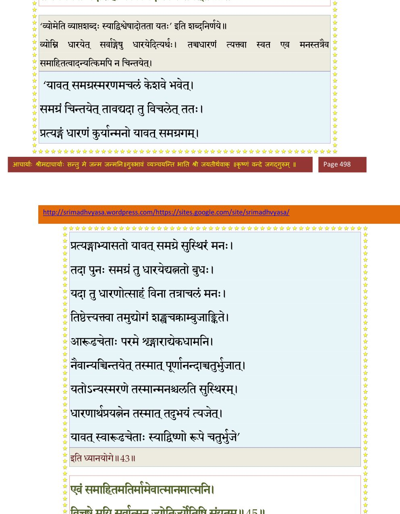
श्लोक ४५
एवं समाहितमतिर्मामेवात्मानमात्मनि ।
विचष्टे मयि सर्वात्मन् ज्योतिर्ज्योतिषि संयुतम् ।। ४५ ।।
विचष्टे मयि सर्वात्मन् ज्योतिर्ज्योतिषि संयुतम् ।। ४५ ।।
भागवततात्पर्यनिर्णय
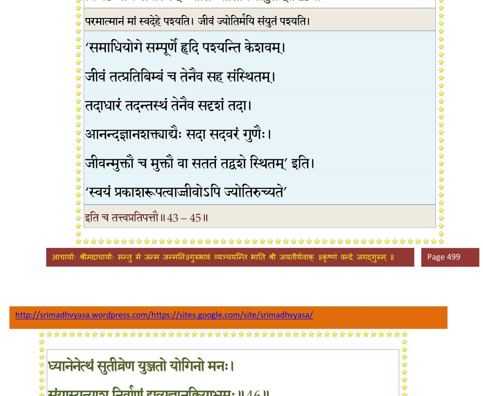
श्लोक ४६
ध्यानेनेत्थं सुतीव्रेण युञ्जतो योगिनो मनः ।
संयास्यत्याशु निर्वाणं द्रव्यज्ञानक्रियाभ्रमः (भ्रमम्)।। ४६ ।।
संयास्यत्याशु निर्वाणं द्रव्यज्ञानक्रियाभ्रमः (भ्रमम्)।। ४६ ।।
भागवततात्पर्यनिर्णय
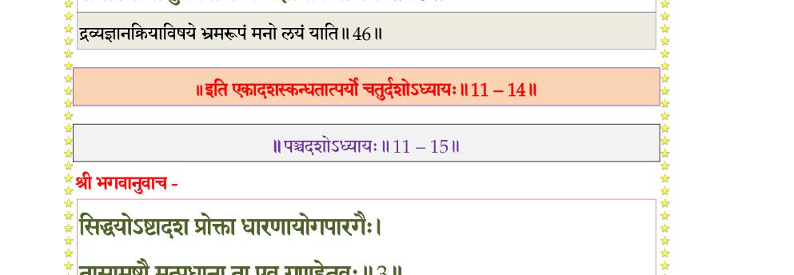
।। इति श्रीमद्भागवते एकादशस्कन्धे चतुर्दशोऽध्यायः ।।